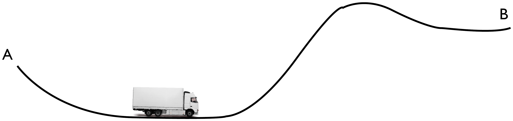
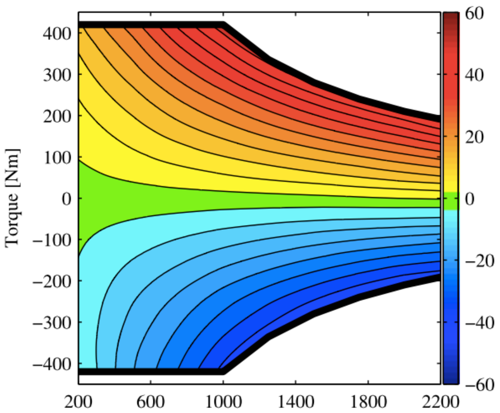
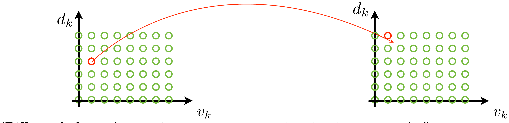
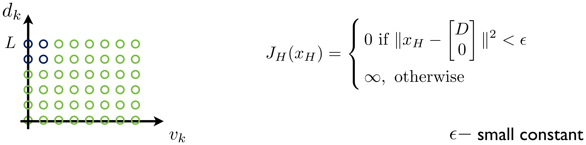

Unit 7 – Beyond Exact Dynamic Programming: Discretization and Static Optimization
4SC000 Optimal Control and Reinforcement Learning
Slides · Exercises · Jupyter notebooks
1 Why we need something beyond exact dynamic programming
Units 5 and 6 showed that for stage decision problems with a linear dynamic model and a quadratic cost, the costs-to-go of the dynamic programming algorithm can be computed analytically: they are quadratic forms \(x_k^\intercal P_kx_k\), the matrices \(P_k\) obey a Riccati recursion, and the optimal policy is a linear state feedback \(u_k=K_kx_k\). That is a very satisfying state of affairs, and it is also a rare one. Linear models with quadratic costs are one of the very few classes of problems for which the DP algorithm can be carried out in closed form. In general we cannot run DP analytically at all.
The obstruction is easy to see on a problem barely more complicated than the ones of Unit 5. Take the two-stage problem
\[ \text{cost:} \quad \sum_{k=0}^1 x_k^2+u_k^2+g_2(x_2), \qquad g_2(x_2)=e^{x_2}, \qquad \text{model:} \ \ x_{k+1}=x_k+u_k . \]
Everything about this problem is as simple as it could be – scalar state, scalar input, two stages, a quadratic running cost, a linear model – and yet the single change \(g_2(x_2)=x_2^2 \to e^{x_2}\) in the terminal cost is enough to destroy the closed-form solution. The last step of the DP recursion asks for \(J_1(x_1)=\min_{u_1}\ x_1^2+u_1^2+e^{x_1+u_1}\), whose minimizer solves the transcendental equation \(2u_1+e^{x_1+u_1}=0\); there is no elementary function \(J_1\) to carry into the next step.
This unit and the next therefore change the question. Instead of asking how to solve the DP recursion exactly, we ask how to approximate the solution well enough to be useful, and what each approximation costs us. Three methods are developed over the next three units:
- discretization (this unit), which replaces the continuous state and input spaces by finite grids and then runs exact DP on the resulting finite problem;
- static optimization (also this unit), which eliminates the state variables altogether and turns the whole problem into a single unconstrained minimization over the control sequence;
- approximate dynamic programming (Unit 8), which keeps the DP structure but replaces the exact cost-to-go by a cheap approximation computed online.
None of the three is uniformly best, and a good part of the value of this unit is understanding precisely where each one breaks down. The short version, which we will arrive at with some care by the end of the unit, is that discretization is defeated by dimension and static optimization is defeated by non-convexity.
2 Discretization
The idea behind discretization is to turn a stage decision problem, with its continuous state and input spaces,
\[ x_{k+1}=f_k(x_k,u_k), \qquad \sum_{k=0}^{h-1}g_k(x_k,u_k)+g_h(x_h), \]
into a discrete optimization problem of the kind we already know how to solve exactly – a finite transition diagram, solved by the DP algorithm of Units 1-3. The conversion is done by sampling, or quantizing, the state and input spaces: we keep only a finite grid of representative states and a finite set of representative inputs, and we let the dynamic model tell us which grid state each (grid state, grid input) pair leads to.

The appeal of this is that nothing new has to be invented: once the problem is finite, the DP algorithm applies verbatim, and it applies regardless of how ugly the cost function is. The price, as we will see, is paid in the number of grid points.
2.1 A first example: the scalar problem with a non-quadratic terminal cost
Return to the two-stage problem that motivated this unit,
\[ \sum_{k=0}^1 x_k^2+u_k^2+g_2(x_2), \qquad x_{k+1}=x_k+u_k, \qquad k\in\{0,1\}, \]
with the non-quadratic terminal cost \(g_2(x_2)=e^{x_2}\). It pays to first run the method on the version we can solve exactly, as a sanity check. For the quadratic terminal cost \(g_2(x_2)=x_2^2\) we obtained in Unit 5 the optimal policy and optimal costs-to-go
\[ u_0=-\frac{3}{5}x_0, \qquad u_1=-\frac{1}{2}x_1, \qquad J_0(x_0)=\frac{8}{5}x_0^2, \qquad J_1(x_1)=\frac{3}{2}x_1^2 . \]
If discretization reproduces these, we can reasonably trust it on the exponential version, where we have nothing to compare against.
The discretization itself is a matter of choosing a grid spacing \(\delta\) and grid extents \(M\) and \(N\), and restricting
\[ \bar u_k \in \{-M,-M+1,\dots,M\}, \qquad \bar x_k \in \{-N,-N+1,\dots,N\}, \]
where the bars denote integer grid indices, so that the actual state and input values are \(x_k=\delta\bar x_k\) and \(u_k=\delta\bar u_k\). The model \(x_{k+1}=x_k+u_k\) then becomes, in grid indices, simply \(\bar x_{k+1}=\bar x_k+\bar u_k\) – which is exact, no approximation required, because the dynamics happen to map grid points to grid points. The cost transforms as
\[ \delta^2\Big(\sum_{k=0}^1 \bar x_k^2+\bar u_k^2\Big)+g_2(\delta\bar x_2), \]
since each squared term picks up a factor \(\delta^2\) while the terminal cost is simply evaluated at the grid value \(\delta \bar x_2\). The result is a finite trellis: three columns of nodes (one per stage), with arcs from every node of one column to the nodes reachable from it, weighted by the stage cost.

Running exact DP backwards on this trellis for the quadratic terminal cost recovers, up to the grid resolution, the policy and costs-to-go we know analytically.

This is the encouragement we needed: the same computation, with \(x_2^2\) replaced by \(e^{x_2}\), should give an equally good approximation of the optimal policy for a problem we cannot solve in closed form.

That the discretized solution converges to the true one as the grid is refined is a statement that can be made precise, but we do not pursue the formalization here.
It is worth recording the numerical answer, because we will obtain it again by a completely different route in the second half of this unit. For initial state \(x_0=1\) the optimal cost is about \(2.64\).

The corresponding control sequence is an initial control \(u_0=-0.7\), which drives the state to \(x_1=0.3\), followed by \(u_1=-0.45\).

Keep the triple \((2.64,\,-0.7,\,-0.45)\) in mind. In the section on static optimization we will recompute it, without any grid at all, and get \(2.6424\) at \(u=(-0.7157,-0.4315)\).
In the discretization above, the grid indices satisfy \(\bar x_k\in\{-N,\dots,N\}\) and \(\bar u_k\in\{-M,\dots,M\}\) with spacing \(\delta\). Suppose you halve \(\delta\) while keeping the covered range of states and inputs the same. By what factor does the number of arcs in the trellis of Fig. 2 grow?
Keeping the covered range fixed while halving \(\delta\) means doubling both \(N\) and \(M\), so the number of states per stage roughly doubles (\(2N+1 \to 4N+1\)) and the number of inputs per state roughly doubles too. The number of arcs per stage is (states) \(\times\) (inputs), so it grows by a factor of about \(4\). For a scalar problem this is a mild price. The point of the “curse of dimensionality” discussion below is that for a state in \(\mathbb{R}^n\) and an input in \(\mathbb{R}^m\) the same refinement multiplies the work by \(2^{n+m}\) instead – which for a quadcopter, \(n=12\) and \(m=4\), is a factor of \(65\,536\) for one halving of the grid.
The panel below is the computation of this subsection, carried out live. Choose the grid spacing \(\delta\), the ranges covered by the state and input grids, and which terminal cost to use, and it runs exact backward DP over the resulting trellis. It starts at the values behind Fig. 3 and Fig. 4: \(\delta=0.05\), states out to \(\pm5\) (\(N=100\)) and inputs out to \(\pm2.5\) (\(M=50\)).
Red markers are the computed grid values, one per grid point; for the quadratic terminal cost the blue curves are the analytical answers from Unit 5, so you can see the discretization sitting on top of them.
Worth trying:
- Start with the quadratic terminal cost. At \(\delta=0.05\) the costs-to-go are already indistinguishable from \(\tfrac85x_0^2\) and \(\tfrac32x_1^2\), and the readout confirms \(J_0(1)=1.6\), \(u_0=-0.6\), \(x_1=0.4\), \(u_1=-0.2\) exactly. This is the sanity check the text asks for.
- Now watch the two worst-error figures as you halve \(\delta\) (there is a button for it). The error in the cost-to-go falls by a factor of about \(4\) each time, the error in the policy by a factor of about \(2\): the cost is smooth at its minimum, so a grid error of \(\delta\) costs only \(\delta^2\) in value, while the policy can never be better than the nearest grid input. That is why the policy plots look visibly staircase-like at any resolution while the cost plots look perfect.
- Switch to the exponential terminal cost. Nothing about the computation changes, which is the whole point: DP never needed the cost to be quadratic. At \(\delta=0.05\) the readout gives \(2.6432\) at \(u_0=-0.7\), \(u_1=-0.45\), the triple quoted above. Refine to \(\delta=0.0125\) and it becomes \(2.6424\) at \(u_0\approx-0.7125\) — converging on the \(2.6424\) at \((-0.7157,-0.4315)\) that the gradient method will produce in the second half of this unit, by a route with no grid in it at all.
- Keep an eye on the arc count and the solve time while you refine. For this scalar problem halving \(\delta\) costs a factor of four and the whole thing still runs in milliseconds. Hold that thought for the curse-of-dimensionality discussion below, where the same refinement on a quadcopter costs a factor of \(2^{16}\) instead.
2.2 From continuous time to a stage decision problem
The example above was already posed in discrete time, and its state was a scalar. Real control problems are usually neither. To extend the method to a state in \(\mathbb{R}^n\) we will need a second kind of discretization – of time – alongside the discretization of the state and input spaces. A small mechanical example will carry us through both.
Consider the toy problem of computing the force needed to move a unit mass one metre along a flat surface, from rest to rest, in one second, with minimum energy.

In continuous time the problem reads
\[ \ddot z(t)=u(t), \qquad z(0)=0, \quad z(1)=1, \qquad \dot z(0)=\dot z(1)=0, \qquad \min\int_0^1 u(t)^2dt . \]
Later in the course we will develop the tools (the continuous-time minimum principle) to solve this exactly; the answer is \(u(t)=6-12t\), giving \(v(t)=6t-6t^2\) and \(z(t)=3t^2-2t^3\). For now it serves as a known reference against which the discretized solutions can be judged.
To get from this continuous-time problem to a stage decision problem we need temporal discretization, which is a different operation from the state/input discretization of the previous section. The full chain of conversions is as follows.

Temporal discretization is not an artificial step introduced for the sake of computation. It is what digital control is: the controller is a computer, it reads the sensors at discrete instants, it computes, and it holds the actuator command constant until the next instant.

So the discrete-time model \(x_{k+1}=f_k(x_k,u_k)\) is not an approximation of the physical system as the controller experiences it – it is an exact description of it, provided we compute \(f_k\) correctly.
2.3 Computing the discrete-time model
The recipe is straightforward: solve the differential equation \(\dot x(t)=f_c(t,x(t),u(t))\) on the interval \(t\in[t_k,t_{k+1})\), from the initial condition \(x(t_k)=x_k\) and with the input held at the constant value \(u(t)=u_k\), and evaluate the solution at \(t=t_{k+1}\):
\[ x_k=x(t_k), \qquad x_{k+1}=x(t_{k+1})=f(x_k,u_k). \]

For a linear system this integration can be carried out in closed form. If \(\dot x(t)=Ax(t)+Bu(t)\), the variation-of-constants formula gives
\[ x(t)=e^{A(t-t_k)}x(t_k)+\int_{t_k}^t e^{A(t-s)}Bu(s)\,ds, \]
and evaluating at \(t=t_{k+1}=t_k+\tau\) with \(u(s)\equiv u_k\) yields the exact discrete-time model
\[ x_{k+1}=A_dx_k+B_du_k, \qquad A_d=e^{A\tau}, \qquad B_d=\Big(\int_0^\tau e^{As}ds\Big)B . \]
This is worth emphasizing: for linear systems, temporal discretization introduces no error whatsoever at the sampling instants. The discretized model is exact.
Applying this to the unit mass gives the familiar double integrator,
\[ \begin{bmatrix}\dot z(t)\\ \dot v(t)\end{bmatrix}=\begin{bmatrix}0&1\\0&0\end{bmatrix}\begin{bmatrix}z(t)\\v(t)\end{bmatrix}+\begin{bmatrix}0\\1\end{bmatrix}u(t) \quad\longrightarrow\quad \begin{bmatrix}z_{k+1}\\v_{k+1}\end{bmatrix}=\begin{bmatrix}1&\tau\\0&1\end{bmatrix}\begin{bmatrix}z_k\\v_k\end{bmatrix}+\begin{bmatrix}\tau^2/2\\\tau\end{bmatrix}u_k, \]
with \(u(t)=u_k\) for \(t\in[t_k,t_{k+1})\), \(z_k=z(t_k)\), \(v_k=v(t_k)\), \(t_{k+1}-t_k=\tau\) and \(K\tau=1\) so that \(K\) steps span the one-second horizon. The cost transforms just as exactly, since the input is piecewise constant:
\[ \int_0^1 u(t)^2dt = \sum_{k=0}^{K-1}\int_{t_k}^{t_{k+1}} u_k^2\,dt = \tau\sum_{k=0}^{K-1}u_k^2 . \]
The boundary conditions \(z(0)=0\), \(z(1)=1\), \(\dot z(0)=\dot z(1)=0\) become \(z_0=v_0=v_K=0\) and \(z_K=1\). This discrete-time problem is a linear quadratic problem with fixed endpoints, and it can be solved by the machinery of Unit 5; the optimal solution can be written as
\[ u_k=-R^{-1}B^\intercal\big((A^\intercal)^{-1}\big)^{k+1}\lambda_0, \qquad \lambda_0=M_{12}^{-1}\begin{bmatrix}1\\0\end{bmatrix}, \qquad \begin{bmatrix}M_{11}&M_{12}\\M_{21}&M_{22}\end{bmatrix}=\begin{bmatrix}A&-BR^{-1}B^\intercal(A^\intercal)^{-1}\\0&(A^\intercal)^{-1}\end{bmatrix}^K, \]
where \(\lambda_0\) is the initial co-state chosen to meet the terminal constraint. What matters for us is the picture: as the sampling period \(\tau\) shrinks, the discrete-time optimal input approaches the continuous-time answer \(u(t)=6-12t\).


The panel below solves the fixed-endpoint minimum-energy problem above for whatever sampling period you choose, and draws the result against the continuous-time optimum \(u(t)=6-12t\), \(z(t)=3t^2-2t^3\), \(v(t)=6t-6t^2\). It opens at \(\tau=0.2\), the left half of Fig. 11; halving it three times walks you through the other three panels of Fig. 11 and Fig. 12.
The discrete problem is solved exactly, not iteratively: with \(x_0=0\) the terminal condition reads \(\sum_{k}A_d^{K-1-k}B_d\,u_k=[z_T\ \ 0]^\intercal\), a pair of linear equations in the \(K\) unknowns \(u_k\), and the minimum-energy solution of an underdetermined linear system is \(u=G^\intercal(GG^\intercal)^{-1}b\). You can also raise the horizon \(T\) or change the target position \(z_T\).
Worth trying:
- The staircase never sits on the continuous curve at the sampling instants \(t_k\) — the readout shows a gap of \(1.4\) at \(\tau=0.2\). Compare it with the gap measured against \(u\) at the middle of each interval, which is six times smaller. A zero-order-hold input cannot track a sloping signal, and the best it can do is match its average over the interval.
- The position and velocity, by contrast, match the continuous optimum very well even at \(\tau=0.2\): worst deviation \(0.004\) in \(z\) and \(0.06\) in \(v\), and the terminal condition \(z(T)=1\), \(v(T)=0\) is met to machine precision at every \(\tau\). That is not an accident of this example, it is the exactness of linear temporal discretization: the discretized model makes no error at the sampling instants, so the only approximation left is the restriction of \(u\) to piecewise-constant signals.
- The energy tells the same story quantitatively. It is always above the continuous optimum \(\int_0^1u^2dt=12\), since the staircase inputs are a subset of all admissible inputs, and the excess falls by a factor of four with each halving of \(\tau\): \(12.5\), \(12.1212\), \(12.0301\), \(12.0075\). In fact the panel’s energy matches \(\frac{12z_T^2}{T^3}\cdot\frac{K^2}{K^2-1}\) exactly, which you can check against the readout for any \(K\) — worth deriving if you want a small exercise.
2.4 What to watch out for in temporal discretization
Two aspects deserve comment, one for the model and one for the cost.
The dynamic model. For non-linear systems, discretization may be hard: there is generally no closed-form solution of the differential equation over one sampling interval. A numerical integration method is then used, the simplest being the explicit Euler step
\[ x_{k+1}=x_k+\tau f(t_k,x_k,u_k). \]
Unlike the linear case, this is an approximation, and its accuracy degrades as \(\tau\) grows; higher-order schemes (Runge-Kutta and the like) are used when Euler is too crude.
The cost function. There are three situations to distinguish. In the first, the problem formulation already penalizes the state and input at the sampling times only, in which case nothing needs to be done:
\[ \sum_{k=0}^{h-1}g_k(x(t_k),u(t_k))+g_h(x(T)) = \sum_{k=0}^{h-1}g_k(x_k,u_k)+g_h(x_h). \]
In the second, the cost is genuinely a continuous-time integral, and it can be split exactly interval by interval,
\[ \int_0^T g_c(t,x(t),u(t))dt = \sum_{k=0}^{h-1}\underbrace{\int_{t_k}^{t_{k+1}} g_c(t,x(t),u(t))dt}_{g_k(x_k,u_k)}, \]
each term being a genuine function of \((x_k,u_k)\) alone because the input is constant and the state on the interval is determined by \(x_k\) and \(u_k\). This is what we did for \(\int_0^1u^2dt\) above, where the integral happened to evaluate to \(\tau u_k^2\) exactly. In the third, and most common, situation, that integral cannot be computed in closed form, and one settles for the rectangle approximation
\[ \int_0^T g_c(t,x(t),u(t))dt \approx \sum_{k=0}^{h-1}\tau\, g_c(k\tau,x_k,u_k). \]
The two claims of this subsection can be checked directly. The panel below simulates a model in continuous time and overlays the trajectory the discretized model produces, and reports the worst gap between them at the sampling instants. Two models are available.
The linear model \(\dot x=Ax+Bu\), with \(A\), \(B\), the constant input \(u\) and the initial state yours to set, discretized exactly as \(A_d=e^{A\tau}\), \(B_d=\big(\int_0^\tau e^{As}ds\big)B\). Make \(\tau\) as large as you like — a whole second if you want, with only four samples across the window. The red markers still land on the blue curve to fourteen or fifteen digits. That is the point made above: for a linear system with a piecewise-constant input, temporal discretization introduces no error at all at the sampling instants, however coarse the sampling. It says nothing about what happens between them, which is exactly why the staircase in the previous subsection looked nothing like \(6-12t\) while the states matched perfectly.
The nonlinear model, an inverted pendulum \(\ddot\theta=\frac{g}{\ell}\sin\theta-b\dot\theta+u\) with \(\theta\) measured from the upright, which has no closed-form solution over a sampling interval. Here the blue curve is a reference solution computed with Runge-Kutta at a step \(400\) times smaller, and the red markers are the explicit Euler model \(x_{k+1}=x_k+\tau f(x_k,u_k)\) of the text. Now the gap is real, and it is large: at \(\tau=0.2\) the Euler pendulum is out by \(1.4\) radians — some \(80^\circ\) — which for a model meant to describe a pendulum near upright is useless.
Worth trying:
- Halve \(\tau\) repeatedly in the nonlinear case and watch the error: \(1.41\), \(0.93\), \(0.54\), \(0.28\), \(0.145\) rad. It falls by a factor of two each time, no faster — explicit Euler is a first-order method, and buying one more decimal digit costs ten times the computation.
- Now switch the scheme to Runge-Kutta 4 at the same \(\tau\). The error goes from \(1.4\) to \(0.005\) rad at \(\tau=0.2\), and then falls by a factor of about sixteen per halving: \(4.9\cdot10^{-3}\), \(3.2\cdot10^{-4}\), \(2.1\cdot10^{-5}\), \(1.3\cdot10^{-6}\). Four extra function evaluations per step buy three orders of magnitude. The readout always shows the other scheme’s error at the same \(\tau\) next to the one you chose, so the comparison needs no bookkeeping.
- Make \(\tau\) large enough, or \(\ell\) small enough, and the Euler iteration does not merely lose accuracy — it blows up, while the real pendulum of course does not. Nothing about the physics has changed; the instability belongs to the integration scheme alone.
- Back in the linear model, try an unstable \(A\) (say \(a_{21}=2\), \(a_{22}=-0.3\)) and a long horizon. The trajectory grows by orders of magnitude and the discretized model still tracks it to twelve digits.
2.5 Discretizing a state space \(\mathbb{R}^n\) and an input space \(\mathbb{R}^m\)
With the temporal discretization in hand we have a genuine stage decision problem,
\[ g_0(x_0,u_0) \quad g_1(x_1,u_1) \quad \dots \quad g_{h-1}(x_{h-1},u_{h-1}) \quad g_h(x_h), \]
\[ x_1=f_0(x_0,u_0), \qquad x_2=f_1(x_1,u_1), \qquad \dots \qquad x_h=f_{h-1}(x_{h-1},u_{h-1}), \]
with \(x_k\in\mathbb{R}^n\) and \(u_k\in\mathbb{R}^m\). Discretizing it means replacing \(\mathbb{R}^n\) by a lattice of sampled states – a regular grid, with its own spacing in each coordinate – and \(\mathbb{R}^m\) by a finite set of sampled inputs, and then evaluating the dynamic model at each lattice point and each admissible input to find which lattice point the transition leads to.

For the double integrator the picture becomes concrete: the state lattice is a grid in the \((z,v)\) plane, with spacings \(\delta_z\) and \(\delta_v\), and the inputs are multiples of a spacing \(\delta_u\).

A pleasant feature of this particular example is that the grid can be chosen so that the transitions land exactly on lattice points, with no rounding at all. Writing the discretized model again,
\[ \begin{bmatrix}z_{k+1}\\v_{k+1}\end{bmatrix}=\begin{bmatrix}1&\tau\\0&1\end{bmatrix}\begin{bmatrix}z_k\\v_k\end{bmatrix}+\begin{bmatrix}\tau^2/2\\\tau\end{bmatrix}u_k \quad\text{with}\quad \delta_z=\delta_u\tau^2/2, \ \ \delta_v=\delta_u\tau, \]
and substituting \(z_k=\delta_z i_z\), \(v_k=\delta_v i_v\), \(u_k=\delta_u i_u\) for integer grid indices, the two update equations collapse to the purely integer recursions
\[ i_z' = i_z + 2i_v + i_u, \qquad i_v' = i_v + i_u, \]
so the lattice is mapped into itself exactly. This is the multidimensional counterpart of the observation, in the scalar example, that \(x_{k+1}=x_k+u_k\) preserved the grid.

With this procedure we obtain the finite transition map \(\bar x_{k+1}=f(\bar x_k,\bar u_k)\) that defines the discrete optimization problem.
Cost, initial and terminal conditions. The cost \(\tau\sum_{k=0}^{K-1}u_k^2\) becomes, in grid quantities,
\[ \tau\sum_{k=0}^{K-1}u_k^2 \quad\longrightarrow\quad \tau\delta_u^2\sum_{k=0}^{K-1}\bar u_k^2 , \]
where, if the input indices are enumerated as \(\bar u_k\in\{1,\dots,n_u\}\), the actual input value is recovered by the centring map \(u_k=\delta_u\big(\bar u_k-1-(n_u-1)/2\big)\), so that the input set is symmetric about zero.
The two-dimensional lattice is in practice enumerated by a single index. With \(n_z\) position levels and \(n_v+1\) velocity levels, the state whose position index is \(i_z\) and whose velocity index is \(i_v\) is numbered
\[ \bar x = 1 + i_v + (n_v+1)\,i_z . \]
The initial condition \(z_0=v_0=0\) is therefore the state \(\bar x_0=1+0+(n_v+1)(0)=1\), and the terminal condition \(z_K=1\), \(v_K=0\) is the single state \(\bar x_h=1+0+(n_v+1)(n_z)\). Terminal conditions of this kind – “the state must be exactly this” – are imposed inside the DP algorithm by giving the terminal cost the value zero at the desired state and \(\infty\) everywhere else:
\[ J_h(\bar x_h) = \begin{cases}0 & \text{if } \bar x_h=1+0+(n_v+1)(n_z)\\ \infty & \text{otherwise.}\end{cases} \]
The infinite cost simply makes every path that fails to reach the target unattractive, so the backward recursion automatically discards it. This trick – a terminal cost of \(\infty\) as a hard constraint – is worth remembering; it reappears in the vehicle application at the end of this section.
Results. Running exact DP on the resulting finite problem for a range of grid spacings shows the two resolutions trading off against each other: the temporal resolution \(\tau\) and the input resolution \(\delta_u\).


A runnable Python companion to this section – zero-order-hold discretization of a continuous-time model and an exact backward-DP solver over finite state and action grids – is available in code/unit7/discretization.py, with the original annotated notebooks A_7_discexample.ipynb (the scalar example of the previous section) and A_7_statedisc.ipynb (this double-integrator grid DP) alongside it; see code/unit7/README.md.
This is the panel at the end of §2.3 again, but now the input is quantized too, so the problem being solved is the fully discrete one of this subsection: exact backward DP over the \((z,v)\) lattice, with \(\delta_z=\delta_u\tau^2/2\) and \(\delta_v=\delta_u\tau\) so that the integer recursions \(i_z'=i_z+2i_v+i_u\), \(i_v'=i_v+i_u\) hold exactly and no rounding is needed. The terminal condition is imposed as described above, by an infinite terminal cost everywhere except the single lattice state \(z=1\), \(v=0\). It is the computation of A_7_statedisc.ipynb, with \(\tau\) and \(\delta_u\) as the two knobs and the ranges of the velocity and input grids also adjustable.
It opens at \(\tau=0.2\), \(\delta_u=1\) — the left panel of Fig. 16. Halving \(\delta_u\) twice reaches Fig. 17, and halving \(\tau\) instead walks along the other axis. The grey horizontal lines in the input plot are the admissible input levels, so you can see exactly what the quantization has to work with.
Worth trying:
- At \(\tau=0.2\), \(\delta_u=1\) the input can only take whole-number values and the energy comes out at \(12.80\), against \(12.50\) for the same \(\tau\) with a continuous input (the §2.3 panel) and \(12\) for the continuous-time problem. The two approximations are now stacked: time, then amplitude.
- Halve \(\delta_u\) to \(0.5\) and the energy drops to exactly \(12.50\) — the continuous-input value. That is not a coincidence: at \(\tau=0.2\) the unquantized optimum is \(u=(5,\,2.5,\,0,\,-2.5,\,-5)\), every entry a multiple of \(0.5\), so this grid happens to contain the exact answer.
- Now halve again to \(\delta_u=0.2\) and watch the energy go up, to \(12.512\). A finer input grid made the answer worse, because \(2.5\) is not a multiple of \(0.2\) and the grid no longer contains the optimum. At \(\delta_u=0.1\) it is back to \(12.50\). Grid refinement converges, but it need not improve things at every step — a useful corrective to the intuition that finer is always better.
- Refine time instead, keeping \(\delta_u=1\): \(12.80\) at \(\tau=0.2\), then \(12.40\), then \(12.20\). The input plot shows why this only goes so far — the staircase gets more steps but each one is still pinned to a whole-number level, which is the point made by Fig. 18. Both resolutions have to come down together.
- Watch the lattice size and the arc count as you refine. \(\delta_z\) goes as \(\delta_u\tau^2\), so halving both \(\tau\) and \(\delta_u\) multiplies the number of position levels by eight, the velocity levels by four, the inputs by two and the stages by two: a factor of \(128\) for one step of refinement in each knob. The panel refuses the finest combination of Fig. 18 outright, reporting the arc count instead — at \(\tau=0.05\), \(\delta_u=0.2\) it is \(1.1\) billion arcs over \(800\,000\) lattice states. That refusal, on a problem with a two-dimensional state and a scalar input, is the subject of the next subsection.
- Finally, narrow the velocity or input range until the target becomes unreachable. The DP reports it honestly: the infinite terminal cost never gets paid off, and \(J_0\) stays infinite.
2.6 The curse of dimensionality
Discretization can always be applied to a general stage decision problem, though not always painlessly: as the examples above show, it may not be possible to hit the desired final state exactly, and the choice of grid spacings requires care.
That raises an obvious question. Is dynamic programming then so powerful that we can solve any stage decision problem? Note how sweeping the claim would be: most digital control problems are stage decision problems.
The answer is no, and the reason is purely computational. Discretizing the state and input spaces is only feasible when those spaces have small dimension. Suppose \(x_k\in\mathbb{R}^n\) and \(u_k\in\mathbb{R}^m\), and suppose we discretize each component of the state with \(N\) values and each component of the input with \(M\) values. The number of lattice points per stage is then about \(N^n\), and the number of decisions – arcs leaving each state – is about \(M^m\). Both grow exponentially in the dimension.
The numbers become absurd very quickly. For the control of a quadcopter, \(n=12\) and \(m=4\). Taking a modest \(N=M=100\) values per component, we would need \(N^n=10^{24}\) states per stage and \(M^m=10^8\) decisions per state per stage. No refinement of the implementation rescues this; the difficulty is structural.
Bellman called this the curse of dimensionality, and it is the single most important limitation of discretization. It is also the reason the rest of this unit, and the whole of Unit 8, exist.
The phrase “curse of dimensionality” is often heard as “dynamic programming cannot handle large problems”. It is worth pinning down which kind of largeness actually hurts.
Take a stage decision problem with \(x_k\in\mathbb{R}^n\), \(u_k\in\mathbb{R}^m\), horizon \(h\), and a grid of \(N\) values per state component and \(M\) values per input component.
How many arc evaluations does one backward DP sweep cost, in terms of \(n\), \(m\), \(N\), \(M\) and \(h\)? And how many numbers must be held in memory to store the cost-to-go at a single stage?
Using that count, by what factor does the work grow if you
- double the horizon \(h\), (b) halve both grid spacings, i.e. double \(N\) and \(M\), (c) add one component to the state, (d) add one component to the input? Which of these four is harmless?
Now put numbers in. Sample at \(\tau=0.01\) s over a one-second horizon, so \(h=100\), and take \(N=M=100\) as in the text. Compute the work for the double integrator of the previous subsections (\(n=2\), \(m=1\)) and for the quadcopter (\(n=12\), \(m=4\)). At \(10^9\) arc evaluations per second, how long does each take? Then recompute the quadcopter for a horizon one thousand times longer, and compare the damage done by the extra time with the damage done by the extra dimensions.
Suppose you are willing to spend \(10^9\) arc evaluations. (a) Keeping \(n=12\), \(m=4\) and \(h=100\), how many grid values per component can you afford? Is the resulting grid of any use? (b) Keeping \(N=M=100\) and \(h=100\), what is the largest total dimension \(n+m\) you can afford?
Finally, compare with the other two methods in this course. The Riccati recursion of Unit 5 costs about \(h\,n^3\) arithmetic operations. The static-optimization route of the second half of this unit turns the problem into a minimization over the \(h\,m\) numbers \(u_0,\dots,u_{h-1}\). In which of the three methods does \(n\) appear in an exponent, and in which does \(h\)?
(i) There are about \(N^n\) lattice states per stage; from each of them the recursion must try each of about \(M^m\) admissible grid inputs, and there are \(h\) stages to sweep. So the work is
\[ h\cdot N^n\cdot M^m \]
arc evaluations. The cost-to-go \(J_k\) is a number per lattice state, so storing one stage of it takes \(N^n\) numbers — a quantity that involves \(n\) but not \(m\) and not \(h\). This asymmetry is worth noting: the input grid is only enumerated, one input at a time, and never stored, whereas the state grid must be held in memory in its entirety. It is one reason the state dimension usually bites harder than the input dimension, the other being simply that \(n>m\) in most applications.
(ii) From \(h\,N^nM^m\):
- doubling \(h\) doubles the work. A factor of \(2\).
- doubling \(N\) and \(M\) multiplies it by \(2^{n+m}\).
- one more state component multiplies it by \(N\).
- one more input component multiplies it by \(M\).
Only (a) is harmless. The horizon enters linearly, because backward DP visits each stage exactly once: it is a single sweep, not a search over sequences. Everything else enters exponentially in a dimension.
(iii) With \(h=100\), \(N=M=100\):
- double integrator: \(10^2\cdot(10^2)^2\cdot(10^2)^1 = 10^8\) arcs, about \(0.1\) seconds. Entirely routine — it is what the panel at the end of §2.1 does while you watch.
- quadcopter: \(10^2\cdot(10^2)^{12}\cdot(10^2)^4 = 10^{34}\) arcs, i.e. \(10^{25}\) seconds, about \(3\cdot10^{17}\) years. That is some \(2\cdot10^7\) times the age of the universe. (The \(10^{24}\) states per stage and \(10^8\) decisions per state quoted in the text are the two factors \(N^n\) and \(M^m\).)
- quadcopter over \(1000\) seconds instead of \(1\): \(h=10^5\), so the work becomes \(10^{37}\) arcs. A horizon one thousand times longer costs a factor of one thousand. The twelve state dimensions cost a factor of \(10^{24}\). The lesson is the comparison, not either number: time is cheap, dimension is not.
(iv)
- We need \(10^2\cdot N^{12}\cdot N^4\leq10^9\), i.e. \(N^{16}\leq10^7\), giving \(N\leq10^{7/16}\approx2.7\): two grid values per component. A grid with two points per axis cannot represent a trajectory at all, so the answer is that no useful grid fits in the budget. Refining is not an option either — each halving of the spacing costs \(2^{16}\approx65\,000\).
- We need \(10^{2}\cdot10^{2n}\cdot10^{2m}\leq10^9\), i.e. \(n+m\leq3.5\). Three dimensions in total, all told, which is exactly the double integrator with its scalar input. A billion operations buys you three dimensions; it buys you ten million time steps.
(v) In the Riccati recursion the cost \(h\,n^3\) is linear in \(h\) and polynomial in \(n\): the state dimension appears as an exponent of \(3\) on \(n\), not with \(n\) in the exponent. A hundred-dimensional LQ problem is a few hundred megaflops, nothing more. In the static-optimization route the unknowns are the \(h\,m\) numbers \(u_0,\dots,u_{h-1}\), so the state dimension barely appears at all — it costs a matrix-vector product per step when the trajectory is simulated — while the horizon now does enter the problem size rather than just the number of sweeps. Only discretization has \(n\) in an exponent.
That is the precise sense in which dynamic programming by discretization is cursed, and the precise reason the rest of this unit exists: the two methods that follow buy their scalability by giving up something else — exactness over all initial states and the guarantee of a global minimum.
The machinery above is not restricted to textbook examples. Consider the problem of minimizing the energy used by a vehicle travelling from rest at point A to rest at point B, a distance \(D\) away, in a given time \(H\), by choosing the engine torque.

A simple power model, of the kind considered in [1, p. 5], balances the power at the wheels against the inertial, gravitational, rolling and aerodynamic contributions:
\[ \underbrace{P_w}_{\substack{\text{inertial}\\\text{power}}} = \underbrace{mv(t)\dot v(t)}_{} + \underbrace{mgv(t)\sin(\alpha(d(t)))}_{\substack{\text{gravitational}\\\text{power}}} + \underbrace{c_0mgv(t)\cos(\alpha(d(t)))}_{\substack{\text{rolling}\\\text{losses}}} + \underbrace{c_2v(t)^3}_{\substack{\text{aerodynamic}\\\text{losses}}}, \]
\[ P_w = \underbrace{P_m}_{\substack{\text{power}\\\text{motor}}} + \underbrace{P_k}_{\substack{\text{power}\\\text{brakes}}}, \]
where \(v\) is velocity, \(d\) the distance from A, \(\alpha\) the road angle, \(m\) the mass, \(g\) gravity, and \(c_0,c_2\) constants.
[1] Optimal Control of Hybrid Vehicles, Bram de Jager, Thijs van Keulen, John Kessels, Springer, 2013.
From the power model one derives the dynamic model
\[ \dot v(t) = -g\sin(\alpha(d(t))) - c_0g\cos(\alpha(d(t)))\mathbb{1}_{v>0} - c_2v(t)^2+c_1T(t), \qquad \mathbb{1}_{v>0}=\begin{cases}1 & \text{if } v>0\\0 & \text{if } v=0,\end{cases} \]
\[ \dot d(t) = v(t), \qquad x(t)=\begin{bmatrix}d(t)\\v(t)\end{bmatrix}, \]
with \(c_1\) a constant and \(T(t)\) the motor torque. The energy is the integral of the power, which is a function of the state (velocity being proportional to rotational velocity \(\omega\)) and the input (motor torque \(T\)):
\[ J = \int_0^H P(T(t),v(t))\,dt . \]

The solution approach follows the five steps developed above.
Step 1. Discretize the plant in time, here with an Euler approximation, since the dynamics are non-linear:
\[ \begin{bmatrix}d_{k+1}\\v_{k+1}\end{bmatrix} = \underbrace{\begin{bmatrix}d_k+\tau v_k\\v_k+\tau(-g\sin(\alpha(d_k))-c_0g\cos(\alpha(d_k))\mathbb{1}_{v_k>0}-c_2v_k^2+c_1u_k)\end{bmatrix}}_{f(x_k,u_k)}, \qquad T(t)=u_k \ \text{ for } t\in[t_k,t_{k+1}), \]
with \(x_k=x(t_k)\) and \(t_k=k\tau\).
Step 2. Discretize the state and input spaces as before.
Step 3. Compute the dynamic model in the discretized space.

Step 4. Discretize the cost, assuming for simplicity \(H=K\tau\):
\[ J = \int_0^H P(T(t),v(t))dt \approx \tau\Big(\sum_{k=0}^{K-1}P(u_k,v_k)\Big). \]
Step 5. Set the terminal cost so that only states close to the desired final state – distance \(D\) and zero velocity – are acceptable. Because of the approximations, the final state may not be reachable exactly, so the hard constraint is relaxed to a small ball of radius \(\epsilon\):
\[ J_H(x_H) = \begin{cases}0 & \text{if } \big\|x_H-\begin{bmatrix}D\\0\end{bmatrix}\big\|^2<\epsilon \\ \infty & \text{otherwise,}\end{cases} \qquad \epsilon \ \text{a small constant.} \]

Results of this approach in the context of optimal driving for an electric bus can be found in the MSc thesis “To identify the potential gains of an optimal driving strategy in an electric bus”, A. R. Shenoy, TU/e, 2016. A very good reference highlighting automotive applications is Vehicle Propulsion Systems, Lino Guzzella and Antonio Sciarretta (Appendix III), 2013.
The discretization recipe is not confined to the problems of this unit. The panel below is A_7_K_Brachistochrone.ipynb made live: Bernoulli’s 1696 problem of finding the curve from \(A=(0,0)\) to \(B=(z_B,y_B)\) along which a bead slides without friction in least time, with the \(y\)-axis pointing down and the speed fixed by energy conservation at \(v=\sqrt{2gy}\).
Almost nothing here is linear or quadratic, and yet the five steps are the same ones used above. The curves are restricted to \(C^1\) cubic splines over \(h\) segments; the state at a node is the pair (height, slope), each drawn from a finite set — \(L+1\) heights \(\ell\bar y/L\) and \(2R+1\) slopes \(\tan\!\big(\tfrac{\pi r}{2(R+1)}\big)\); the decision at a node is the next node’s pair; the stage cost is the travel time along the unique cubic joining the two, obtained by quadrature; and the terminal cost is \(0\) at the target height and \(\infty\) elsewhere, which is how \(B\) is reached exactly. The grey dots are the admissible node heights, blue is the exact cycloid \((z,y)=c(\theta-\sin\theta,\,1-\cos\theta)\), red is what DP returns.
Worth trying:
- At the notebook’s own settings the descent takes \(0.6625\) s against \(0.6355\) s for the true cycloid, an excess of \(4.3\%\) — from a state space of just eighteen points. Press “finer grid” (\(L=20\), \(R=3\), \(h=8\)) and the excess drops to \(0.66\%\).
- Compare both with the straight ramp from \(A\) to \(B\): \(1.1432\) s, four fifths slower than the cycloid. That gap is the whole point of the problem, and it is why the answer surprised Bernoulli’s contemporaries.
- Look at where the red curve goes. It dives below the target height and comes back up to meet \(B\) — at \(L=20\), \(R=3\) the node heights run \(0,10,14,16,17,17,16,13,8\) against a target of \(8\). Trading height for speed early and paying some of it back later beats going straight at it.
- Refine \(R\) alone and then \(L\) alone. The slope set matters more than you might expect: with \(R=1\) the only available slopes are \(\pm45^\circ\) and \(0\), which is why the coarse curve looks faceted.
- Watch the state count. It is \((L+1)(2R+1)\), and the cost table has \(n^2\) entries, each needing a quadrature — so the work grows as \(L^2R^2\), and the panel refuses grids beyond about \(1.3\) million segment times. The curse of dimensionality again, now with a two-dimensional state made of a height and a slope.
3 Static optimization
Before turning to the second method, it is worth pausing to place it against the material of the previous units.
| Discrete optimization problems (Units 1–4) | Stage decision problems (Units 5–7) | |
|---|---|---|
| Optimal policy |
|
|
| Easy to apply DP. | Not easy to apply DP, except when the cost is quadratic and the model is linear (Unit 5). Otherwise, discretize first. | |
| Optimal path |
|
|
| Alternative methods can be more efficient: Dijkstra’s algorithm, A*. | Alternative method: static optimization, the second half of this unit. | |
3.1 Turning a stage decision problem into a single minimization
The problem we started this unit with,
\[ \sum_{k=0}^1 x_k^2+u_k^2+g_2(x_2), \qquad g_2(x_2)=e^{x_2}, \qquad x_{k+1}=x_k+u_k, \qquad k\in\{0,1\}, \qquad x_0=1, \]
can be written as a plain optimization problem
\[ \min_{y\in\mathbb{R}^n} c(y), \]
with no dynamics and no constraints at all. The trick is to eliminate the state variables, which are not really free: they are determined by the initial state and the control sequence. Writing
\[ x_1=x_0+u_0, \qquad x_2=x_1+u_1=x_0+u_0+u_1, \]
and substituting into the cost gives
\[ x_0^2+u_0^2+x_1^2+u_1^2+e^{x_2} = x_0^2+u_0^2+(x_0+u_0)^2+u_1^2+e^{(x_0+u_0+u_1)}, \]
which is a function of \((u_0,u_1)\) alone. Setting \(y=(u_0,u_1)\) puts the problem in the desired form \(\min_{y\in\mathbb{R}^2}c(y)\).
This reformulation is the second of our three methods, and it has a very different character from discretization. It gives up on computing a policy – a rule \(u_k=\mu_k(x_k)\) valid for every state – and computes instead an optimal path: one control sequence, for one initial state. In exchange, it is completely unaffected by the dimension of the state space. What it is affected by, as we will see, is convexity.
3.2 Unconstrained optimization: the basic vocabulary
Consider the general unconstrained problem
\[ \min_{y\in\mathbb{R}^n} c(y). \]

A point \(y^*\in\mathbb{R}^n\) is a
local minimum if there exists \(\epsilon>0\) such that for all \(y\in\mathbb{R}^n\) with \(\|y-y^*\|<\epsilon\),
\[ c(y^*)\leq c(y); \tag{1} \]
strict minimum if (1) holds with strict inequality;
global minimum if (1) holds for every \(y\in\mathbb{R}^n\).
Local, strict and global maxima are defined in the same way with the inequality reversed. The distinction matters a great deal in practice: numerical methods find local minima, whereas what we usually want is a global one.
3.3 First-order conditions
If \(c\in\mathcal{C}^1\), a necessary condition for \(y^*\) to be a minimum is that the gradient of \(c\) vanish at \(y^*\):
\[ \nabla c(y^*)=0, \]
that is, the \(n\) unknowns \((y_1^*,\dots,y_n^*)\) must satisfy the \(n\) equations
\[ \nabla c(y^*) = \begin{bmatrix}\frac{\partial}{\partial y_1}c(y_1^*,\dots,y_n^*) & \dots & \frac{\partial}{\partial y_n}c(y_1^*,\dots,y_n^*)\end{bmatrix} = \begin{bmatrix}0 & \dots & 0\end{bmatrix}. \]
A few notational conventions, used throughout the rest of the course: with some abuse of notation, \(\nabla c(y^*)\) means \(\nabla c(y)|_{y=y^*}\); when convenient we write \(\frac{\partial c}{\partial y}(y^*) \equiv \nabla c(y^*)\) or \(c_y(y^*) \equiv \nabla c(y^*)\); and by convention the gradient is a row vector.
As an example, take
\[ c(y)=y_1e^{-y_1^2-y_2^2}, \qquad \nabla c(y)=e^{-y_1^2-y_2^2}\begin{bmatrix}-2y_1^2+1 & -2y_1y_2\end{bmatrix}. \]
Since the exponential never vanishes, \(\nabla c(y)=0\) requires \(y_1y_2=0\) and \(2y_1^2=1\), hence \(y_2=0\) and \(y_1=\pm 1/\sqrt2\):
\[ (y_1,y_2)=\Big(\tfrac{1}{\sqrt2},0\Big) \quad \text{maximum}, \qquad (y_1,y_2)=\Big(-\tfrac{1}{\sqrt2},0\Big) \quad \text{minimum}. \]

3.4 Second-order conditions
The first-order condition alone cannot tell a minimum from a maximum or a saddle point, which is what the second derivative is for.
Necessary condition. If \(c\in\mathcal{C}^2\), a necessary condition for \(y^*\) to be a local minimum is that the Hessian be positive semi-definite,
\[ \nabla^2c(y^*)\geq0, \qquad \nabla^2c(y) = \begin{bmatrix}\frac{d^2c}{dy_1^2}(y) & \dots & \frac{d^2c}{dy_1dy_n}(y) \\ \dots & \dots & \dots \\ \frac{d^2c}{dy_ndy_1}(y) & \dots & \frac{d^2c}{dy_n^2}(y)\end{bmatrix}. \]
Sufficient condition. If \(c\in\mathcal{C}^2\), a sufficient condition for \(y^*\) to be a strict local minimum is that the Hessian be positive definite,
\[ \nabla^2c(y^*)>0. \]
3.5 Convex functions
Everything changes when the cost is convex. A function \(c:\mathbb{R}^n\to\mathbb{R}\) is convex if for every \(y_1\in\mathbb{R}^n\), \(y_2\in\mathbb{R}^n\) and \(\alpha\in[0,1]\),
\[ c(\alpha y_1+(1-\alpha)y_2) \leq \alpha c(y_1)+(1-\alpha)c(y_2), \]
that is, the chord joining any two points on the graph lies on or above the graph.

Two consequences make convexity the single most useful structural property in numerical optimization:
- if \(c\in\mathcal{C}^2\), convexity is equivalent to \(\nabla^2c(y)\geq0\) for all \(y\in\mathbb{R}^n\);
- for a convex \(c\in\mathcal{C}^1\), the condition \(\nabla c(y^*)=0\) is not only necessary but also sufficient for \(y^*\) to be a global minimum.
The second point is the important one. For a convex problem there are no spurious local minima to get trapped in: any stationary point found by any method is the answer.
Show that the reformulated cost of the motivating example,
\[ c(u_0,u_1)=x_0^2+u_0^2+(x_0+u_0)^2+u_1^2+e^{x_0+u_0+u_1}, \]
is convex in \((u_0,u_1)\) for any fixed \(x_0\), without computing the Hessian.
Convexity is preserved by sums and by composition with an affine map. The term \(x_0^2\) is a constant; \(u_0^2\) and \(u_1^2\) are convex; \((x_0+u_0)^2\) is the convex function \(t\mapsto t^2\) composed with the affine map \((u_0,u_1)\mapsto x_0+u_0\), hence convex; and \(e^{x_0+u_0+u_1}\) is the convex function \(t\mapsto e^t\) composed with the affine map \((u_0,u_1)\mapsto x_0+u_0+u_1\), hence convex. A sum of convex functions is convex, so \(c\) is convex. (Computing the Hessian confirms it: \(\nabla^2 c = \begin{bmatrix}4&0\\0&2\end{bmatrix}+e^{x_0+u_0+u_1}\begin{bmatrix}1&1\\1&1\end{bmatrix}\), the sum of a positive definite and a positive semi-definite matrix.)
Note what this argument does not cover: the second non-quadratic terminal cost \(\sqrt{|x_2|}\), which is not convex – and that is exactly where the gradient method will run into trouble below.
3.6 The gradient method
The workhorse numerical method for
\[ \min_{y\in\mathbb{R}^n} c(y) \]
is gradient descent. Denoting the iterates by \(y^{(k)}\) (the lecture slides write \(x_k\); we use \(y^{(k)}\) here to avoid a clash with the state of the control problem), the method is:
Given an initial estimate \(y^{(0)}\), iterate
\[ y^{(k+1)} = y^{(k)} - \epsilon_k \nabla c(y)^\intercal|_{y=y^{(k)}} \]
until a stopping criterion is met (e.g. \(k>k_{\max}\) or \(\|\nabla c(y)|_{y=y^{(k)}}\|<\delta\)).
Each step moves against the gradient, i.e. in the direction of steepest local decrease; the transpose appears only because the gradient is a row vector by our convention.
Choosing the step \(\epsilon_k\) is the delicate part.
- Ideally \(\epsilon_k\) solves \(\min_{\alpha\in\mathbb{R}_{\geq0}} c\big(y^{(k)}-\alpha\nabla c(y)^\intercal|_{y=y^{(k)}}\big)\), the exact line search. This is the best possible step along the chosen direction, but finding it requires solving a scalar minimization at every iteration, which may be computationally demanding.
- The simplest choice is a constant step \(\epsilon_k=\bar\epsilon\), but in general one needs \(\epsilon_k\to0\); otherwise the method will, in the best case, oscillate around the minimum rather than settle on it. A small \(\bar\epsilon\) means many iterations are needed to get close; a large \(\bar\epsilon\) risks divergence.
- In practice a heuristic is used that guarantees a decrease, \(c(y^{(k+1)})<c(y^{(k)})\) – Armijo’s rule and its relatives being the standard choice.
Newton’s method is much faster near the solution. It replaces the descent direction \(\nabla c(y)^\intercal\) by \([\nabla^2c(y)]^{-1}\nabla c(y)^\intercal\), scaling the step by the local curvature; the price is that the Hessian must be formed and inverted at each iteration.
The panel below runs the method above on five problems, three of them the ones this unit actually cares about. Click anywhere in the left plot to choose the starting point \(y^{(0)}\), then step or play the iteration. The left panel shows the cost — as contour bands in two dimensions, as the curve itself in one — with the iterates joined in red and the known minimiser marked by a green cross; the right panel tracks \(\log_{10}\|\nabla c(y^{(k)})\|\), the quantity the stopping criterion actually watches.
The five problems are the reformulated cost \(1+u_0^2+(1+u_0)^2+u_1^2+g_2(1+u_0+u_1)\) of §3.9 with each of its three terminal costs, plus two classics: the Rosenbrock valley and a one-dimensional double well.
Worth trying:
- Quadratic terminal cost, fixed step. The Hessian here is \(\begin{bmatrix}6&2\\2&4\end{bmatrix}\), with eigenvalues \(7.236\) and \(2.764\), so the iteration is stable exactly for \(\bar\epsilon<2/\lambda_{\max}=0.2764\). Try \(\bar\epsilon=0.05\) (\(142\) iterations to converge), \(0.2\) (\(32\)), \(0.25\) (\(120\) — past the best value it slows down again as the steps start to overshoot), and \(0.3\), where it diverges. This is the whole “too small is slow, too large diverges” story in four clicks, and the threshold is not a rule of thumb but a number you can compute.
- Exact line search, same problem. Notice the right-angled turns: the new gradient is orthogonal to the direction just searched, which is what “the best step along this direction” means. It is faster per iteration but each iteration costs a scalar minimization.
- Rosenbrock. With a fixed step the iterates crawl along the floor of the valley and \(10^4\) iterations still leave you short; with exact line search it is done in about \(50\). Nothing about the problem is non-convex — the difficulty is purely the curvature, and it is what Newton’s method is for.
- The double well. Click on the left of the hump and you reach \(y=-1.4445\) with \(c=-4.7148\); click on the right and you reach \(y=1.3819\) with \(c=-3.3009\). Both runs satisfy the stopping criterion perfectly, the gradient going to zero in each case, and neither has any way of telling you that the other is better. This is §3.7 in one picture.
- Non-quadratic II, \(g_2=\sqrt{|x_2|}\). This one fails differently, and more interestingly. Watch \(\|\nabla c\|\): it does not go to zero. The iterates slide onto the cusp line \(1+u_0+u_1=0\) and jam there, because any step along \(-\nabla c\) crosses the kink and increases the cost. Where they jam depends on where you started, and only one point of that line, \((-\tfrac23,-\tfrac13)\) with \(c=\tfrac53\), is the actual minimum. A stopping test on the gradient would never fire; one on the decrease per step would, and would report success at the wrong place.
3.7 What these methods can and cannot do
These methods work very well for convex problems – where the cost and, in the constrained case, the constraint functions are convex. For non-convex problems, computing the minimum is genuinely hard, and the numerical methods have many issues, the most familiar being that they get stuck in local minima.
There are of course many more methods than the two sketched above. For unconstrained problems: Newton and quasi-Newton methods, conjugate gradient methods, and others. For constrained problems: penalty, barrier and augmented Lagrangian methods.
One class of problems deserves separate mention, because it will be the computational engine of Unit 8. Quadratic programming problems,
\[ \min_x \ q(x)=\tfrac12 x^\intercal Gx+x^\intercal d \qquad \text{subject to} \quad a_i^\intercal x=b_i, \ \ i\in\mathcal{E}, \qquad a_i^\intercal x\geq b_i, \ \ i\in\mathcal{I}, \]
can be solved very efficiently, and they are exactly what is needed to model linear quadratic control problems with input and state constraints – the subject of the first half of Unit 8.
Two very good references, if you want to go further:
Numerical Optimization, Jorge Nocedal and Stephen Wright, Springer, 1999.
Convex Optimization, Stephen Boyd and Lieven Vandenberghe, Cambridge University Press, 2004.
3.8 Application to optimal control: eliminating the state
The elimination we performed on the two-stage example works in general. Finding an optimal path for a stage decision problem,
\[ \min_{x,u} \ \sum_{k=0}^{h-1}g_k(x_k,u_k)+g_h(x_h) \qquad \text{s.t. } x_{k+1}=f(x_k,u_k), \quad k\in\{0,\dots,h-1\}, \]
is a constrained optimization problem in the joint variable \((x,u)\). But the state trajectory is entirely determined by the initial state \(x_0\) (which is given) and the control sequence \(u=(u_0,u_1,\dots,u_{h-1})\), by composing the dynamic model with itself:
\[ x_1=f(x_0,u_0)=F_1(x_0,u_0)=\bar F_1(x_0,u), \] \[ x_2=f(f(x_0,u_0),u_1)=F_2(x_0,u_0,u_1)=\bar F_2(x_0,u), \] \[ x_3=f(f(f(x_0,u_0),u_1),u_2)=F_3(x_0,u_0,u_1,u_2)=\bar F_3(x_0,u), \] \[ \vdots \] \[ x_h=f(f(\dots,f(x_0,u_0),u_1),u_2,\dots,u_{h-1})=F_h(x_0,u_0,\dots,u_{h-1})=\bar F_h(x_0,u). \]
Here \(F_k\) makes explicit that \(x_k\) depends only on the first \(k\) inputs, while \(\bar F_k\) regards it as a function of the whole sequence \(u\) – a convenient uniform notation. Substituting these expressions into the cost leaves an unconstrained problem in \(u\) alone:
\[ \min_u c(u), \qquad c(u)=\sum_{k=0}^{h-1}g_k(\bar F_k(x_0,u),u_k)+g_h(\bar F_h(x_0,u)), \qquad \bar F_0(x_0,u)=x_0 . \]
Note what has and has not been achieved. The number of optimization variables is \(mh\) – the input dimension times the horizon – and is completely independent of the state dimension \(n\). That is precisely the weakness of discretization turned into a strength. On the other hand \(c(u)\) inherits whatever nastiness \(f\) and \(g_k\) possess, and long horizons make the composed maps \(\bar F_k\) increasingly awkward.
Take the scalar linear system
\[ x_{k+1}=2x_k+u_k, \qquad k\in\{0,1\}, \qquad x_0=1, \]
with the cost
\[ \sum_{k=0}^{1}\big(x_k^2+u_k^2\big)+3x_2^2 . \]
- Carry out the elimination: write \(x_1\) and \(x_2\) as functions of \(x_0\) and \((u_0,u_1)\), substitute, and put the result in the form
\[ c(u)=u^\intercal Xu+Yu+z, \qquad u=\begin{bmatrix}u_0\\u_1\end{bmatrix}, \]
with \(X\) symmetric. Give \(X\), \(Y\) and \(z\).
Is the stationary point of \(c\) a minimum? Say how you know from \(X\) alone, and whether it is the global minimum.
Solve the first-order conditions for \(u^\star\), and give the resulting state trajectory and the optimal cost.
Check your answer against the dynamic programming of Unit 5: run the Riccati recursion \(P_2=3\), \(P_k=a^2P_{k+1}+q-\frac{(aP_{k+1}b)^2}{b^2P_{k+1}+r}\) with \(a=2\), \(b=1\), \(q=r=1\), and compare \(u_0^\star\) with \(K_0x_0\) and \(u_1^\star\) with \(K_1x_1\), where \(K_k=-\frac{bP_{k+1}a}{b^2P_{k+1}+r}\). The two routes must agree; make sure you can say why they give the same numbers but not the same kind of answer.
Finally, suppose the state were in \(\mathbb{R}^{12}\) and the horizon were \(h=50\), with a scalar input. How many optimization variables would this reformulation have? Compare with the lattice that the first half of this unit would have needed.
(i) Composing the model twice,
\[ x_1=2x_0+u_0=2+u_0, \qquad x_2=2x_1+u_1=4+2u_0+u_1 . \]
Substituting into the cost,
\[ c(u)=1+u_0^2+(2+u_0)^2+u_1^2+3(4+2u_0+u_1)^2 , \]
and expanding,
\[ c(u)=14u_0^2+12u_0u_1+4u_1^2+52u_0+24u_1+53 , \]
so that
\[ X=\begin{bmatrix}14&6\\6&4\end{bmatrix}, \qquad Y=\begin{bmatrix}52&24\end{bmatrix}, \qquad z=53 . \]
Note where each piece comes from: the \(3x_2^2\) term alone contributes \(3\cdot4=12\) to \(X_{11}\) and \(3\cdot 2\cdot 2=12\) to the cross term, because \(x_2\) depends on \(u_0\) with coefficient \(a=2\). With \(a=1\), as in §3.9, those factors disappear — which is exactly why that example looks tidier than this one.
(ii) \(X\) is symmetric with trace \(18\) and determinant \(56-36=20\), so its eigenvalues are \(\tfrac12(18\pm\sqrt{324-80})=16.810\) and \(1.190\), both positive: \(X\succ0\). A quadratic with a positive definite \(X\) is strictly convex, so its unique stationary point is the global minimum. (This is the comfortable case; the two non-quadratic terminal costs of §3.9 are where it stops being automatic.)
(iii) \(\nabla c(u)=2u^\intercal X+Y=0\) gives \(u^\star=-\tfrac12X^{-1}Y^\intercal\). With \(X^{-1}=\tfrac1{20}\begin{bmatrix}4&-6\\-6&14\end{bmatrix}\),
\[ X^{-1}Y^\intercal=\frac1{20}\begin{bmatrix}4\cdot52-6\cdot24\\-6\cdot52+14\cdot24\end{bmatrix}=\frac1{20}\begin{bmatrix}64\\24\end{bmatrix}=\begin{bmatrix}3.2\\1.2\end{bmatrix}, \qquad u^\star=\begin{bmatrix}-1.6\\-0.6\end{bmatrix}. \]
The trajectory is then \(x_0=1\), \(x_1=2-1.6=0.4\), \(x_2=0.8-0.6=0.2\), and the cost
\[ c(u^\star)=1+2.56+0.16+0.36+3(0.04)=4.2 . \]
(iv) The recursion gives \(P_1=4\cdot3+1-\frac{(2\cdot3)^2}{3+1}=13-9=4\) and \(P_0=4\cdot4+1-\frac{(2\cdot4)^2}{4+1}=17-12.8=4.2\), with gains \(K_1=-\frac{6}{4}=-1.5\) and \(K_0=-\frac{8}{5}=-1.6\). Hence \(u_0=K_0x_0=-1.6\) and \(u_1=K_1x_1=-1.5(0.4)=-0.6\): the same pair. The optimal cost is \(J_0(x_0)=P_0x_0^2=4.2\), the same number.
They agree because both minimize the same function over the same set; they differ in what they return. DP produces the policy \(u_k=K_kx_k\), valid from any state, and as a by-product the cost-to-go for every \(x_0\). The elimination produces two numbers, valid for \(x_0=1\) and nothing else. If a disturbance moved the state off \(x_1=0.4\), the gain \(K_1\) would still be the right thing to apply, whereas \(u_1=-0.6\) would not, and the whole minimization would have to be redone. Unit 8 is built on exactly that observation.
(v) The optimization variables are the inputs, \(mh=1\cdot50=50\) of them, whatever the state dimension is — the reformulation never mentions \(n\) except inside the composed maps \(\bar F_k\). Discretizing instead, with a modest \(N=100\) values per state component, would have meant \(N^n=100^{12}=10^{24}\) lattice states per stage. That contrast is the reason both halves of this unit exist, and the reason the second half is the one that scales.
3.9 Three examples on the same problem
To see the method work and then fail, run it on one dynamic model with three different terminal costs.
Dynamic model \(\quad x_{k+1}=x_k+u_k\), \(k\in\{0,1\}\).
Cost \(\quad \displaystyle\sum_{k=0}^1 x_k^2+u_k^2+g_2(x_2)\).
| Terminal cost | |
|---|---|
| Quadratic | \(g_2(x_2)=x_2^2\) |
| Non-quadratic I | \(g_2(x_2)=e^{x_2}\) |
| Non-quadratic II | \(g_2(x_2)=\sqrt{\lvert x_2\rvert}\) |
Initial condition \(\quad x_0=1\).
3.9.1 Quadratic terminal cost
Step 1. Write the state variables as functions of the control inputs:
\[ x_1=x_0+u_0, \qquad x_2=x_1+u_1=x_0+u_0+u_1 . \]
Step 2. Write the cost as a function of the control inputs:
\[ x_0^2+u_0^2+x_1^2+u_1^2+x_2^2 = x_0^2+u_0^2+(x_0+u_0)^2+(x_0+u_0+u_1)^2+u_1^2 \]
\[ = \begin{bmatrix}u_0\\u_1\end{bmatrix}^\intercal\begin{bmatrix}3&1\\1&2\end{bmatrix}\begin{bmatrix}u_0\\u_1\end{bmatrix}+x_0\begin{bmatrix}4&2\end{bmatrix}\begin{bmatrix}u_0\\u_1\end{bmatrix}+3x_0^2 . \]
Step 3. Find the optimal inputs by differentiating and setting the derivative to zero. For a quadratic \(u^\intercal Xu+x_0Y u+z\) with \(X>0\), the stationary point is \(u=-\tfrac12X^{-1}Y^\intercal x_0\):
\[ \begin{bmatrix}u_0\\u_1\end{bmatrix} = -\frac12\begin{bmatrix}3&1\\1&2\end{bmatrix}^{-1}\begin{bmatrix}4\\2\end{bmatrix}x_0 = \begin{bmatrix}-\frac35\\-\frac15\end{bmatrix}x_0 = \begin{bmatrix}-\frac35\\-\frac15\end{bmatrix} \quad (\text{when } x_0=1). \]
Step 4. Substitute back into the cost:
\[ \text{cost:} \ \frac85 . \]
Both the answers agree with Unit 5 exactly, as they must. The DP solution gave the policy \(u_0=-\tfrac35x_0\), \(u_1=-\tfrac12x_1\) and cost-to-go \(J_0(x_0)=\tfrac85x_0^2\); here we obtain the path for the particular initial state \(x_0=1\), and indeed \(u_1=-\tfrac12x_1=-\tfrac12\cdot\tfrac25=-\tfrac15\). Note that the static-optimization route has produced a pair of numbers, not a feedback law: if \(x_0\) changed, or if a disturbance pushed the state off its predicted trajectory, the whole computation would have to be redone. Unit 8 is built around exactly that observation.
3.9.2 Non-quadratic terminal cost I: \(g_2(x_2)=e^{x_2}\)
Step 1 is unchanged: \(x_1=x_0+u_0\), \(x_2=x_1+u_1=x_0+u_0+u_1\).
Step 2. The cost becomes
\[ x_0^2+u_0^2+x_1^2+u_1^2+e^{x_2} = x_0^2+u_0^2+(x_0+u_0)^2+u_1^2+e^{(x_0+u_0+u_1)} . \]
Step 3. Now the first-order conditions are no longer linear. Differentiating and setting the derivative to zero would lead to a system of non-linear equations; one could apply a numerical method to solve it, but in general this is difficult. Two practical routes remain: apply the gradient method to minimize \(c\) directly, or – since there are only two scalar control inputs – simply plot the function and look.
Plotting
\[ h(u_0,u_1)=1+u_0^2+(1+u_0)^2+u_1^2+e^{1+u_0+u_1} \]
for \(x_0=1\) shows a convex bowl, as established in the quick exercise above.

Applying the gradient method with line search,
\[ u^{(k+1)}=u^{(k)}-\alpha_k\frac{\partial J}{\partial u}(u^{(k)}), \qquad \alpha_k=\underset{\alpha\in[0,1)}{\arg\min} \ J(u^{(k)}-\alpha a), \ \ a=\frac{\partial J}{\partial u}(u^{(k)}), \qquad u^{(k)}=[u_0^{(k)} \ \ u_1^{(k)}], \]
from two quite different initial guesses, \(u^{(0)}=(1,1)\) and \(u^{(0)}=(0.1,1.5)\), both runs converge in six iterations to the same point,
\[ u^{(6)}\approx(-0.7157,\ -0.4315). \]
Step 4. Substituting back, \(h(-0.7157,-0.4315)=2.6424\).
This is the payoff promised earlier. Compare with the discretization result of the first half of this unit: a cost of about \(2.64\), attained with \(u_0=-0.7\) and \(u_1=-0.45\). Two completely different numerical methods – one gridding the state space and running exact DP, the other eliminating the state entirely and running gradient descent – agree to the resolution of the coarser one. That agreement is the practical justification for trusting either.
3.9.3 Non-quadratic terminal cost II: \(g_2(x_2)=\sqrt{\lvert x_2\rvert}\)
Now change the terminal cost once more and plot
\[ 1+u_0^2+(1+u_0)^2+u_1^2+\sqrt{\lvert 1+u_0+u_1\rvert}. \]

Running the same gradient method with line search from two initial guesses now gives two different answers:
\[ u^{(0)}=(1,1) \ \to \ h(-0.5695,-0.1376)=1.6910, \qquad u^{(0)}=(-0.9,-0.6) \ \to \ h(-0.6667,-0.3333)=1.6669 . \]
The second is better than the first, and neither run has any way of knowing it. For non-convex functions we may simply fail to obtain the minimum with the gradient method – and, worse, fail to notice.
Contrast this with discretization: a grid-based DP sweep on this same problem is entirely indifferent to convexity, because it examines every grid point and therefore cannot be trapped anywhere. That contrast is the substance of the comparison we can now draw.
A runnable Python companion to this section is code/unit7/gradient_method.py, which implements the cost, its gradient, and plain gradient descent, and reproduces the example of A_7_gradsearch.ipynb; A_7_K_MinEnergy.ipynb and A_7_K_Brachistochrone.ipynb apply the same machinery to larger problems.
3.10 Comparing the two methods
We were able to solve, numerically, a problem we could not solve analytically with DP – and it was convexity of the reformulated cost that made this work. For non-convex costs it would be hard. We could equally have used discretization plus DP, which is also a numerical method, and which would have been indifferent to convexity but limited by the dimension of the state.
The two limitations are complementary, and neither is repairable: discretization is limited by the curse of dimensionality, while static optimization can get stuck in local minima and is only guaranteed to behave when the cost is convex. This gives a compact decision table:
| dimension | convexity | DP discretization | Static optimization |
|---|---|---|---|
| small \(n\leq3\) | convex | ✓ | ✓ |
| small \(n\leq3\) | non-convex | ✓ | ✗ |
| large | convex | ✗ | ✓ |
| large | non-convex | ✗ | ✗ |
Two entries deserve a comment. In the top row, both methods work, and the choice is made on other grounds – discretization gives a policy, static optimization gives only a path. In the bottom row, neither method works. Large, non-convex problems are the hard case, and they are also the common case in practice. That empty corner of the table is where Unit 8 begins.
For each of the following, decide which of the two methods of this unit you would attempt, and why.
- A scalar inventory problem over 20 stages with a piecewise-linear, non-convex ordering cost.
- Trajectory optimization for a 12-state quadcopter over a horizon of 50 steps, with a quadratic cost and linear dynamics.
- The same quadcopter, but with a cost that includes a non-convex obstacle-avoidance penalty.
Discretization. The state is scalar, so the grid is cheap, and non-convexity is no obstacle to a DP sweep. Static optimization would have 20 variables and a non-convex cost, with no guarantee of finding the global minimum.
Static optimization. With \(n=12\) the state grid is hopeless (\(N^{12}\) points), while the reformulated problem has only \(mh=4\times50=200\) variables and – being a linear model with a quadratic cost – is convex, in fact a quadratic program. (Of course, for this particular case we also have the exact LQR solution of Unit 5, which is better still, and gives a policy rather than a path.)
Neither, as the table’s bottom row says: large and non-convex. This is precisely the setting where the approximate dynamic programming methods of Unit 8 – MPC and rollout – become the practical answer, accepting suboptimality in exchange for a policy that can be computed online.
To close the unit, here is the whole static-optimization route applied to a problem of a realistic size — the one in A_7_K_MinEnergy.ipynb. A load of mass \(m=0.2\) hangs on a rod of length \(\ell=0.5\) from a crane trolley of mass \(M=1\), with \(b=0.05\), \(I=0.01\), giving the four-state model \([x\ \ \dot x\ \ \theta\ \ \dot\theta]^\intercal\) sampled at \(\tau=0.1\). The trolley starts displaced by \(x_0\) with everything at rest, and must be brought to \(x=\dot x=\theta=\dot\theta=0\) exactly at time \(T=h\tau\), with the load no longer swinging. The energy spent is
\[ \sum_{k=0}^{h-1}g(u_k), \qquad g(u)=u^2+q\,u^4, \qquad q=3\cdot10^{-4}, \]
which is not quadratic, so none of the machinery of Unit 5 applies and the grid of the first half of this unit would need four state dimensions.
The elimination of §3.8 is done in two stages here, which is worth seeing. Since \(x_h=0\) is demanded exactly and the system has \(n=4\) states, the last four inputs are not free at all: writing \(x_h=\mathcal{C}\tilde u+A^4x_{h-4}\) with \(\mathcal{C}=[A^3B\ \ A^2B\ \ AB\ \ B]\) invertible, they are determined by everything that came before, \(\tilde u=M\bar u+v\) with \(v=-\mathcal{C}^{-1}A^hx_0\) and \(M=-\mathcal{C}^{-1}[A^{h-1}B\ \cdots\ A^4B]\). What is left is an unconstrained minimization over the \(h-4\) remaining inputs \(\bar u\), and the terminal condition holds identically at every iterate — which the panel reports, and which is why \(|x_h|\) never moves off \(10^{-15}\) no matter how bad the current guess is.
The strip at the top is the crane itself, moving exactly as the plots below say it does: the trolley at \(x(t)\), the rod at the true angle \(\theta(t)\) and drawn to the same scale as the trolley’s travel, the orange arrow the force \(u(t)\), and the faint blue curve the path the load sweeps out. It is the continuous motion, not the samples — between two sampling instants the input is held constant, so the model is re-integrated at \(\tau/8\) to get the curve between them. Press “play motion” or drag the time slider; the animation always shows the iterate currently selected, so you can watch a half-converged guess swing the load around and then replay the converged one.
Worth trying:
- Press “run to the end” at the default \(h=9\). Iteration \(0\) starts at an energy of \(725\,383\) and Newton’s method brings it to \(70.6629\) in five steps. That starting value is not arbitrary: \(\bar u=0\) is the \(h=4\) solution, the one with no freedom at all, so the animation shows exactly what the extra five degrees of freedom are worth.
- Set \(h=4\). There is nothing to optimise — four inputs, four terminal conditions — and the panel says so. The sequence costs \(725\,383\) and peaks at \(181\) N. Now walk \(h\) up: \(16\,417\) at \(h=5\), \(547\) at \(h=7\), \(70.7\) at \(h=9\), \(6.77\) at \(h=12\), \(0.705\) at \(h=16\). Time is the cheapest thing you can give a controller.
- Switch between Newton and the plain gradient method at \(h=9\). Both reach \(70.662911\); Newton takes \(5\) iterations and the gradient method takes \(1707\). At \(h=16\) the gradient method has still not converged after \(8000\). This is the claim at the end of §3.6, made on a real problem.
- Set \(q=0\). The cost becomes a pure quadratic in \(\bar u\) and Newton’s method lands on the answer in a single step — it minimizes the quadratic model, and here the model is the function. Put \(q\) back and it needs five.
- Watch the motion at iteration \(0\) and then at the last iteration. The first flings the trolley back and forth and lets the load swing wildly; the converged one moves it across once and arrives with the rod hanging still. Both end at exactly \(x=\theta=0\) — the terminal constraint was never in question — but one costs ten thousand times more.
- The cart’s travel is small next to the half-metre rod, so at \(x_0=0.1\) the animation is a modest shuffle. Set \(x_0=0.3\) or \(0.4\) and it becomes a proper crane move, with the load swinging visibly out and being caught again at the end.
- Press “random start” a few times. The iterates begin at energies of \(10^6\)–\(10^8\) and every run lands on \(70.662911\): with \(g\) convex, the gradient and Newton methods cannot be trapped, which is the guarantee §3.7 says we lose the moment convexity goes.
4 Summary
Exact dynamic programming can be carried out analytically only in special cases, of which the linear quadratic problem of Units 5-6 is the main one. This unit developed two numerical alternatives.
State and input discretization transforms any stage decision problem into a finite discrete optimization problem, on which the DP algorithm of Units 1-3 runs unchanged, producing an approximate policy. When the underlying problem is posed in continuous time, a separate temporal discretization comes first – exact for linear systems, via \(A_d=e^{A\tau}\) and \(B_d=\int_0^\tau e^{As}ds\,B\), and approximate (Euler or better) for non-linear ones – which is also precisely what a digital controller does to the plant anyway. Discretization is insensitive to non-convexity but is not feasible when the state and input dimensions are large: with \(N\) values per state component and \(M\) per input component, the grid has \(N^n\) states and \(M^m\) decisions per state, an exponential growth that Bellman named the curse of dimensionality.
Static optimization goes the other way: it eliminates the state variables by composing the dynamic model, leaving a single unconstrained minimization \(\min_u c(u)\) in the control sequence alone, to be attacked with the gradient method, Newton’s method, or a quadratic-programming solver. Its cost is independent of the state dimension, but it delivers an optimal path rather than a policy, and it is only reliable when the reformulated cost is convex – as the \(e^{x_2}\) and \(\sqrt{|x_2|}\) examples showed side by side.
Neither method covers the case of a large, non-convex problem, and neither static optimization on its own produces a feedback policy. Unit 8 takes up both gaps at once, by embedding these numerical solvers inside a receding-horizon loop.